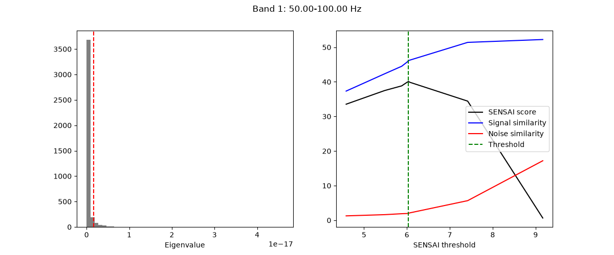
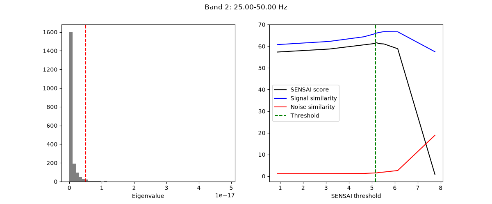
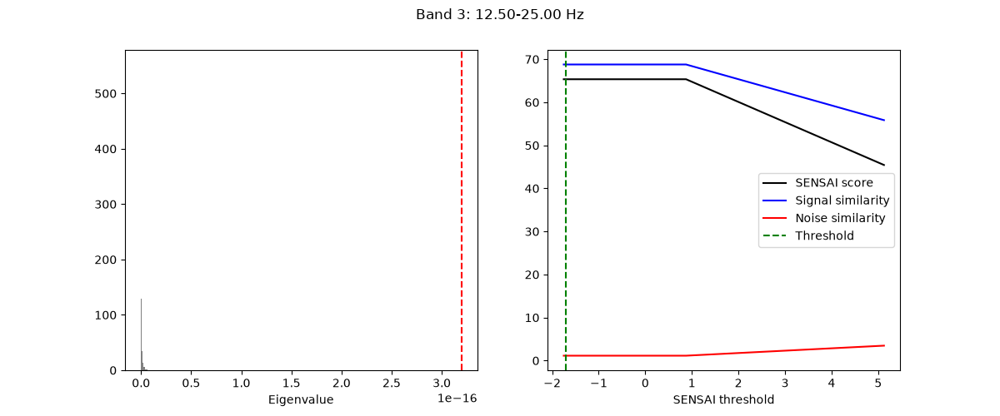
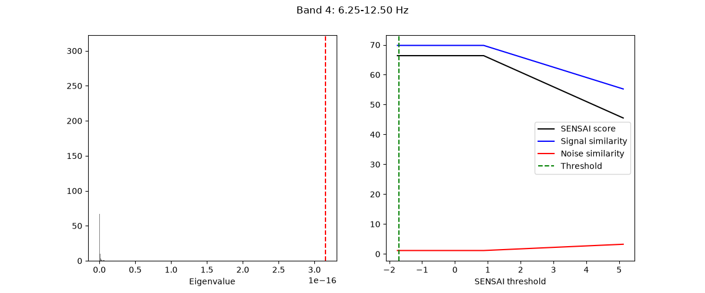
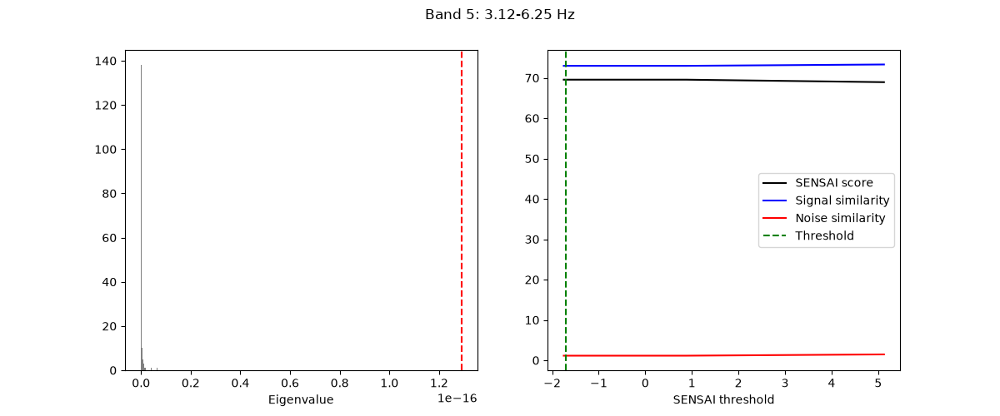
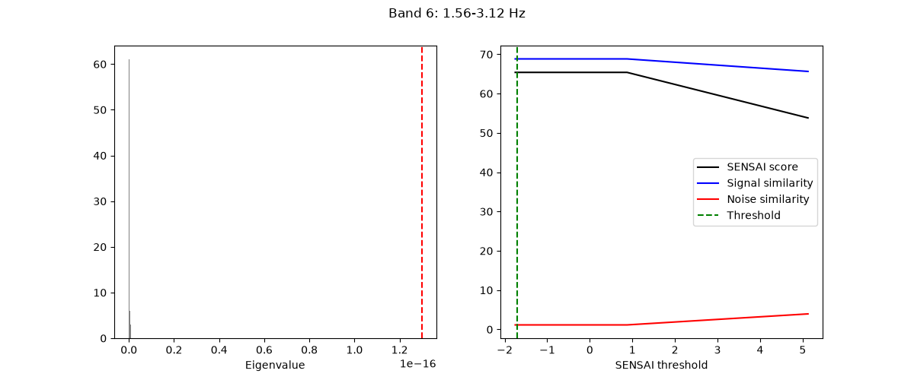
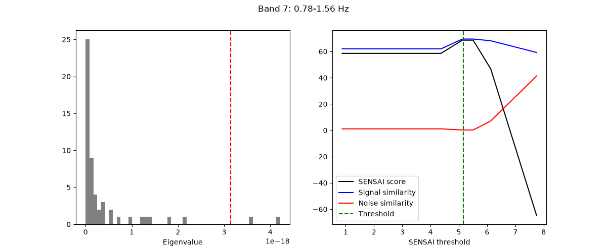
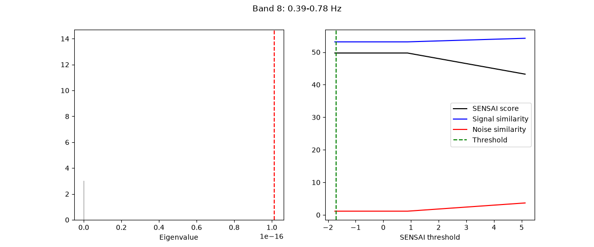
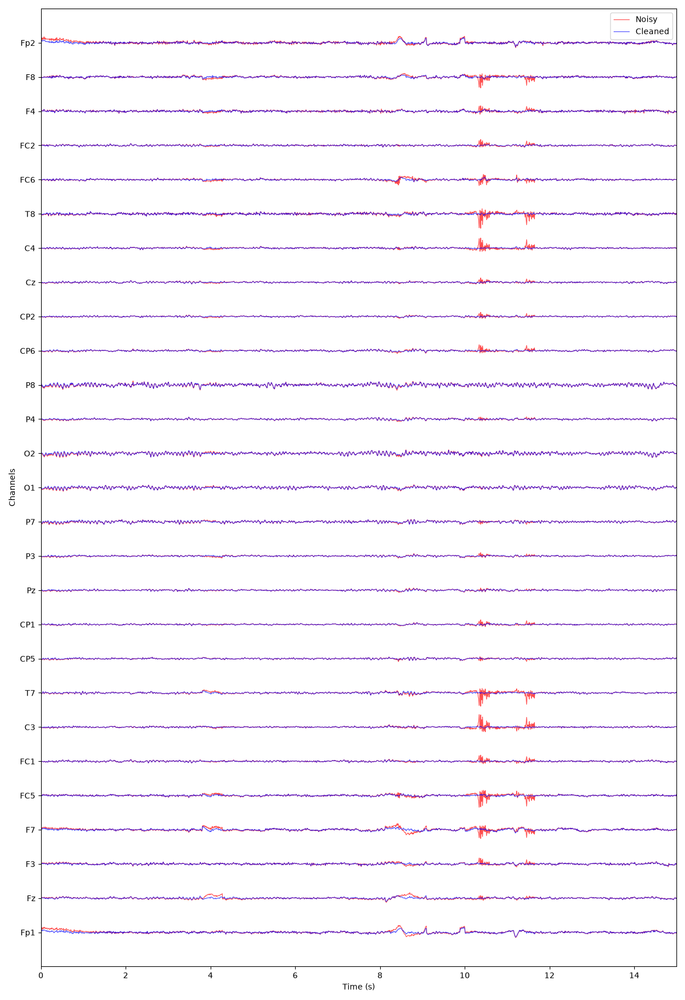

Note
Go to the end to download the full example code.
Understanding the adaptive extension of multiband GEDAI🔗
This tutorial demonstrates how to use Adaptive Multiband GEDAI.
The method tackles the limitations of the standard multiband GEDAI
by automatically determining the optimal epoch duration for each
band (i.e., wavelet level) based on the frequency content of the band.
By doing so, it allows to capture both transient and sustained artifacts
across different frequency ranges.
Note
The purpose of this tutorial is to explain the different parameters of
the AdaptiveMultibandGedai model and help you
better understand the underlying algorithm. If you want to learn how to
use Adaptive Multiband GEDAI in a practical, end-to-end offline
denoising workflow, please refer to the
Practical Pipelines section.
Filtering raw data in 1 contiguous segment
Setting up high-pass filter at 0.5 Hz
FIR filter parameters
---------------------
Designing a one-pass, zero-phase, non-causal highpass filter:
- Windowed time-domain design (firwin) method
- Hamming window with 0.0194 passband ripple and 53 dB stopband attenuation
- Lower passband edge: 0.50
- Lower transition bandwidth: 0.50 Hz (-6 dB cutoff frequency: 0.25 Hz)
- Filter length: 1321 samples (6.605 s)
For simplicity, we will only use the first 30 seconds of the data in this tutorial. In practice, it is recommended to use the full recording for fitting the GEDAI model, as this allows the model to better capture the noise characteristics of the data.
raw.crop(0, 30)
GEDAI Adaptive Multiband model🔗
The AdaptiveMultibandGedai model uses wavelet decomposition to
separate the EEG data into different frequency bands and applies GEDAI
separately to each band.
The wavelet decomposition is controlled by:
wavelet_type: The wavelet family (default:"haar").wavelet_level: Number of decomposition levels (default:"auto").broadband_pass: Whether to run an initial broadband GEDAI pass (default:True).
wavelet_type = "haar"
The wavelet level (wavelet_level) controls the number of frequency
bands that the data is decomposed into.
When set to "auto" (default), the optimal level is computed automatically
based on the sampling frequency and the high-pass cutoff.
For example, for a sampling frequency of 200 Hz, 9 wavelet levels
provide wavelet bands covering classical EEG frequency bands:
(0.00 - 0.20 Hz)
(0.20 - 0.39 Hz)
(0.39 - 0.78 Hz)
(0.78 - 1.56 Hz)
(1.56 - 3.12 Hz) Delta
(3.12 - 6.25 Hz) Theta
(6.25 - 12.5 Hz) Alpha
(12.5 - 25 Hz) Beta
(25 - 50 Hz) Gamma
(50 - 100 Hz) High Gamma
(100 - 200 Hz)
wavelet_level = "auto"
For each wavelet level, AdaptiveMultibandGedai automatically
determines the optimal epoch duration. Slower frequency bands are
estimated on longer epochs, while faster frequency bands are estimated on
shorter epochs.
This adaptive approach allows both transient and sustained artifacts to be
captured across different frequency ranges.
The cycles_per_wavelet parameter controls the number of cycles of the
wavelet included in each epoch (default: 10).
cycles_per_wavelet = 10
With these parameters defined, we instantiate the model.
Enabling broadband_pass=True (default) runs an initial broadband GEDAI
pass to eliminate gross artifacts before wavelet decomposition.
adaptive_multiband_gedai = AdaptiveMultibandGedai(
wavelet_type=wavelet_type,
wavelet_level=wavelet_level,
cycles_per_wavelet=cycles_per_wavelet,
broadband_pass=True,
)
Model Fitting🔗
The fitting process of AdaptiveMultibandGedai is performed separately for
each wavelet level using continuous SENSAI optimization
(sensai_method="optimize").
The wavelet_low_cutoff parameter controls which low-frequency bands are
ignored (e.g. below high-pass filtering). Setting wavelet_low_cutoff="auto"
uses raw.info['highpass'] to automatically exclude sub-cutoff levels.
wavelet_low_cutoff = "auto"
noise_multiplier = 3.0
Fit the model directly on raw data:
adaptive_multiband_gedai.fit_raw(
raw,
noise_multiplier=noise_multiplier,
wavelet_low_cutoff=wavelet_low_cutoff,
n_jobs=n_jobs,
)
343 x 343 full covariance (kind = 1) found.
[adaptive.fit_raw] INFO: Applying wavelet HP pre-filter (sub-0.50 Hz) and running broadband GEDAI pass...
The different wavelet parameters are stored in the
adaptive_multiband_gedai._wavelets_fits attribute. The ignore key
indicates which wavelet levels were ignored based on the
wavelet_low_cutoff setting. The duration key indicates the epoch
duration used to estimate the GEDAI model of the corresponding wavelet level.
[{'band_index': 0, 'fmin': 50.0, 'fmax': 100.0, 'model': <Gedai (fitted)>, 'duration': 0.2, 'n_samples': 40, 'ignore': False, 'sensai_bounds': (0.0, 12.0), 'sensai': 40.09601816855025, 'enova': 0.0, 'band_data': array([[-9.81244385e-07, 3.25221944e-07, 7.94420418e-07, ...,
-8.38999088e-08, 1.69716187e-07, -1.50189660e-08],
[-2.68122435e-08, 1.51500700e-07, 1.61772204e-07, ...,
-2.06504726e-08, -4.52145564e-08, -1.60151237e-07],
[-3.26425400e-07, 1.81415924e-07, 2.70810295e-07, ...,
2.65532766e-08, 3.75673292e-08, -4.34253670e-08],
...,
[ 4.63864750e-09, 8.26537742e-08, -8.31172748e-08, ...,
6.27628675e-08, 2.07330375e-07, -1.52154932e-07],
[ 3.15572983e-07, 4.36244061e-09, -3.94490448e-07, ...,
1.69206515e-07, 2.65205785e-07, -1.61636642e-07],
[-9.10468989e-07, 3.29180060e-07, 7.85320112e-07, ...,
1.89735698e-07, 4.07567929e-07, -3.41691689e-07]],
shape=(27, 6001))}, {'band_index': 1, 'fmin': 25.0, 'fmax': 50.0, 'model': <Gedai (fitted)>, 'duration': 0.4, 'n_samples': 80, 'ignore': False, 'sensai_bounds': (-6.0, 12.0), 'sensai': 61.56574421723083, 'enova': 0.0, 'band_data': array([[-9.20629447e-07, 3.02875795e-07, 1.18380550e-06, ...,
-1.77263134e-07, -1.43026872e-07, -7.73726137e-07],
[-1.97294906e-08, 2.99662594e-07, 2.72499932e-07, ...,
3.85315582e-09, -2.27897301e-07, -2.79541099e-07],
[-2.74553136e-07, 1.99788554e-07, 4.56750965e-07, ...,
7.70498286e-08, -3.83953447e-08, -3.02003821e-07],
...,
[-3.14899115e-08, -2.83692396e-08, -1.56809713e-07, ...,
2.05266238e-07, 2.07896954e-07, 2.00907845e-08],
[ 2.83764108e-07, -1.75089400e-07, -7.07703729e-07, ...,
2.31341591e-07, 4.37277120e-07, 3.81716044e-07],
[-1.07999310e-06, 2.80279333e-07, 1.13102108e-06, ...,
2.44582593e-07, 1.53120091e-07, -8.85709654e-07]],
shape=(27, 6001))}, {'band_index': 2, 'fmin': 12.5, 'fmax': 25.0, 'model': <Gedai (fitted)>, 'duration': 0.8, 'n_samples': 160, 'ignore': False, 'sensai_bounds': (-6.0, 12.0), 'sensai': 65.3564284053712, 'enova': 0.0, 'band_data': array([[-4.58722731e-07, 2.33337809e-07, 8.54233118e-07, ...,
-1.05518877e-06, -1.13807536e-06, -9.29388525e-07],
[ 3.19339244e-08, 1.93092063e-07, 3.01777651e-07, ...,
-3.00111176e-07, -2.37944995e-07, -1.26584461e-07],
[ 8.60513716e-10, 1.95327062e-07, 3.16422832e-07, ...,
-2.30192549e-07, -2.25693752e-07, -1.46151507e-07],
...,
[ 6.07114633e-08, -1.44108488e-08, -2.44929965e-08, ...,
8.74570439e-08, 1.93505240e-07, 1.52709194e-07],
[ 1.28324316e-07, -2.34575342e-07, -4.71837326e-07, ...,
2.91366068e-07, 4.70942714e-07, 3.98269451e-07],
[-5.07708870e-07, 2.99515891e-10, 5.38989470e-07, ...,
-7.60861424e-07, -8.58191428e-07, -7.95411545e-07]],
shape=(27, 6001))}, {'band_index': 3, 'fmin': 6.25, 'fmax': 12.5, 'model': <Gedai (fitted)>, 'duration': 1.6, 'n_samples': 320, 'ignore': False, 'sensai_bounds': (-6.0, 12.0), 'sensai': 66.37753685394703, 'enova': 0.0, 'band_data': array([[-3.17467711e-07, 8.43746646e-08, 4.40960345e-07, ...,
-1.19921734e-06, -9.95780306e-07, -6.88481977e-07],
[ 1.85851824e-08, 1.50263392e-07, 2.49204078e-07, ...,
-2.87914363e-07, -2.19638294e-07, -1.14615372e-07],
[-7.35202560e-09, 9.86807134e-08, 1.90261940e-07, ...,
-2.47489022e-07, -1.81331260e-07, -1.00755095e-07],
...,
[-1.02733487e-08, 4.41573178e-08, 7.67021144e-08, ...,
-2.30809800e-07, -1.59477325e-07, -8.28955912e-08],
[-8.32643527e-08, -1.58165201e-07, -2.22248820e-07, ...,
1.99910143e-08, 6.30090402e-09, -2.84424038e-08],
[-3.36313481e-07, 2.20238941e-08, 3.33106545e-07, ...,
-1.07496777e-06, -9.20418609e-07, -6.67166398e-07]],
shape=(27, 6001))}, {'band_index': 4, 'fmin': 3.125, 'fmax': 6.25, 'model': <Gedai (fitted)>, 'duration': 3.2, 'n_samples': 640, 'ignore': False, 'sensai_bounds': (-6.0, 12.0), 'sensai': 69.55182423703032, 'enova': 0.0, 'band_data': array([[-2.35476162e-07, -1.83568520e-08, 1.97856276e-07, ...,
-7.33006194e-07, -5.91201872e-07, -4.26950691e-07],
[ 1.17403656e-07, 1.75386597e-07, 2.29861800e-07, ...,
-3.46174283e-08, 1.13727613e-08, 6.17825270e-08],
[ 4.70105784e-08, 9.53200880e-08, 1.45378391e-07, ...,
-5.39723660e-08, -2.40801231e-08, 8.21476009e-09],
...,
[-6.59318888e-09, 5.16128747e-08, 1.12943980e-07, ...,
-1.35530429e-07, -9.96064094e-08, -5.78581158e-08],
[-2.39585228e-07, -2.61477427e-07, -2.78215490e-07, ...,
-1.83046715e-07, -1.98270529e-07, -2.18701862e-07],
[-2.38480674e-07, -1.37854477e-08, 2.05992962e-07, ...,
-7.47746761e-07, -6.02767051e-07, -4.37205039e-07]],
shape=(27, 6001))}, {'band_index': 5, 'fmin': 1.5625, 'fmax': 3.125, 'model': <Gedai (fitted)>, 'duration': 6.4, 'n_samples': 1280, 'ignore': False, 'sensai_bounds': (-6.0, 12.0), 'sensai': 65.39654620688553, 'enova': 0.0, 'band_data': array([[ 3.09327005e-08, 1.63931008e-07, 2.93586019e-07, ...,
-3.49408662e-07, -2.27030930e-07, -9.96572911e-08],
[ 6.09560401e-08, 9.73587407e-08, 1.31935564e-07, ...,
-4.84323300e-08, -1.23555656e-08, 2.41600628e-08],
[ 1.60005969e-07, 1.82166371e-07, 2.01206410e-07, ...,
8.35424329e-08, 1.10888871e-07, 1.36377192e-07],
...,
[ 9.00738331e-08, 1.21269227e-07, 1.51791885e-07, ...,
6.37298646e-10, 2.95591218e-08, 5.91257660e-08],
[-3.17438498e-07, -3.13097234e-07, -3.07041177e-07, ...,
-3.22194592e-07, -3.22334461e-07, -3.20887978e-07],
[ 2.23846281e-08, 1.48335184e-07, 2.72584289e-07, ...,
-3.32807811e-07, -2.18075352e-07, -9.98931405e-08]],
shape=(27, 6001))}, {'band_index': 6, 'fmin': 0.78125, 'fmax': 1.5625, 'model': <Gedai (fitted)>, 'duration': 12.8, 'n_samples': 2560, 'ignore': False, 'sensai_bounds': (-6.0, 12.0), 'sensai': 68.62892183700994, 'enova': 0.0, 'band_data': array([[-2.65901888e-07, -2.02622237e-07, -1.39689152e-07, ...,
-4.48294706e-07, -3.88730450e-07, -3.27972395e-07],
[-1.68554783e-07, -1.54667745e-07, -1.41766611e-07, ...,
-2.12265160e-07, -1.97700085e-07, -1.83036671e-07],
[-1.24652066e-07, -1.13777798e-07, -1.03640953e-07, ...,
-1.59328454e-07, -1.47510149e-07, -1.35884036e-07],
...,
[-2.26099605e-07, -2.09092255e-07, -1.93027952e-07, ...,
-2.77478328e-07, -2.60669110e-07, -2.43546701e-07],
[-3.11554028e-07, -3.16631432e-07, -3.21188855e-07, ...,
-2.93181207e-07, -3.00023642e-07, -3.06209568e-07],
[-1.61376700e-07, -1.07214390e-07, -5.35043116e-08, ...,
-3.16088179e-07, -2.65808850e-07, -2.14418051e-07]],
shape=(27, 6001))}, {'band_index': 7, 'fmin': 0.390625, 'fmax': 0.78125, 'model': <Gedai (fitted)>, 'duration': 25.6, 'n_samples': 5120, 'ignore': False, 'sensai_bounds': (-6.0, 12.0), 'sensai': 49.72361398330847, 'enova': 0.0, 'band_data': array([[ 8.41294840e-08, 1.11192626e-07, 1.38306012e-07, ...,
4.82672249e-09, 3.09726516e-08, 5.74157470e-08],
[-4.23533895e-07, -4.11188265e-07, -3.98698950e-07, ...,
-4.59430083e-07, -4.47657966e-07, -4.35692295e-07],
[-1.47106114e-07, -1.38304371e-07, -1.29381539e-07, ...,
-1.72634728e-07, -1.64226881e-07, -1.55721552e-07],
...,
[-8.40637006e-08, -7.71964753e-08, -7.02502446e-08, ...,
-1.04237862e-07, -9.75306716e-08, -9.08268079e-08],
[ 1.63860644e-07, 1.65864886e-07, 1.67943635e-07, ...,
1.57177772e-07, 1.59566734e-07, 1.61782291e-07],
[ 2.18102798e-07, 2.45970811e-07, 2.73880744e-07, ...,
1.36024427e-07, 1.63166665e-07, 1.90517620e-07]],
shape=(27, 6001))}, {'band_index': 8, 'fmin': 0.0, 'fmax': 0.390625, 'model': None, 'duration': 51.2, 'n_samples': 10240, 'ignore': True, 'sensai_bounds': (0.0, 12.0), 'enova': 0.0, 'band_data': None}]
The wavelet model results can also be visualized using the plot_fit method:
adaptive_multiband_gedai.plot_fit()








[<Figure size 1200x500 with 2 Axes>, <Figure size 1200x500 with 2 Axes>, <Figure size 1200x500 with 2 Axes>, <Figure size 1200x500 with 2 Axes>, <Figure size 1200x500 with 2 Axes>, <Figure size 1200x500 with 2 Axes>, <Figure size 1200x500 with 2 Axes>, <Figure size 1200x500 with 2 Axes>]
%% Transform the Data (Denoising) —————————— Denoising is performed seamlessly using continuous dual-stream cosine overlap-add blending across each band:
Model Summary Table🔗
We can inspect the model fitting parameters and subband thresholds:
adaptive_multiband_gedai.fit_summary()
'==================================================================================\n AdaptiveMultibandGedai Summary Table\n==================================================================================\n Frequency Band | Epoch (s) | Threshold | SENSAI (%) | ENOVA (%)\n ---------------------------+------------+------------+-------------+-----------\n Pass 1: Broadband | 1.00 s | 2.41e-16 | 65.61 % | --\n Band 0 (50.00-100.00 Hz) | 0.20 s | 1.605e-18 | 40.10 % | --\n Band 1 (25.00-50.00 Hz) | 0.40 s | 5.086e-18 | 61.57 % | --\n Band 2 (12.50-25.00 Hz) | 0.80 s | 3.195e-16 | 65.36 % | --\n Band 3 (6.25-12.50 Hz) | 1.60 s | 3.15e-16 | 66.38 % | --\n Band 4 (3.12-6.25 Hz) | 3.20 s | 1.289e-16 | 69.55 % | --\n Band 5 (1.56-3.12 Hz) | 6.40 s | 1.297e-16 | 65.40 % | --\n Band 6 (0.78-1.56 Hz) | 12.80 s | 3.141e-18 | 68.63 % | --\n Band 7 (0.39-0.78 Hz) | 25.60 s | 1.011e-16 | 49.72 % | --\n Band 8 (0.00-0.39 Hz) | 51.20 s | IGNORED | -- | --\n==================================================================================\n Fitted SENSAI Optimization Score: 60.84 %\n=================================================================================='
Quality Evaluation: Explained Noise Variance (ENOVA)🔗
ENOVA (Explained Noise Variance) quantifies the proportion of signal variance removed as artifact:
ENOVA = var(noise) / var(original)
Clean EEG segments: ENOVA is near 0% (typically < 5-10%), indicating minimal alteration of genuine brain activity.
Artifact-contaminated segments: ENOVA spikes to 50-95%, showing selective rejection of high-power ocular, muscular, or movement artifacts.
We can compute ENOVA across epochs and channels using the gedai.metrics module:
original_data = raw.get_data()
clean_data = adaptive_multiband_denoised_raw.get_data()
noise_data = original_data - clean_data
sfreq = raw.info["sfreq"]
epoch_samples = max(1, round(sfreq * 1.0))
enova_epochs = compute_enova_per_epoch(clean_data, noise_data, epoch_samples)
enova_stats = enova_summary(enova_epochs)
print(f"Mean ENOVA across epochs: {enova_stats['mean'] * 100:.2f} %")
print(f"Median ENOVA: {enova_stats['median'] * 100:.2f} %")
print(f"Max ENOVA (peak artifact): {enova_stats['max'] * 100:.2f} %")
Mean ENOVA across epochs: 32.14 %
Median ENOVA: 20.80 %
Max ENOVA (peak artifact): 87.81 %
Finally, we can visualize the before-and-after denoising overlay:
plot_mne_style_overlay_interactive(raw, adaptive_multiband_denoised_raw, duration=15.0)

(<Figure size 1200x1750 with 1 Axes>, <Axes: xlabel='Time (s)', ylabel='Channels'>)
Total running time of the script: (0 minutes 7.642 seconds)
Estimated memory usage: 325 MB